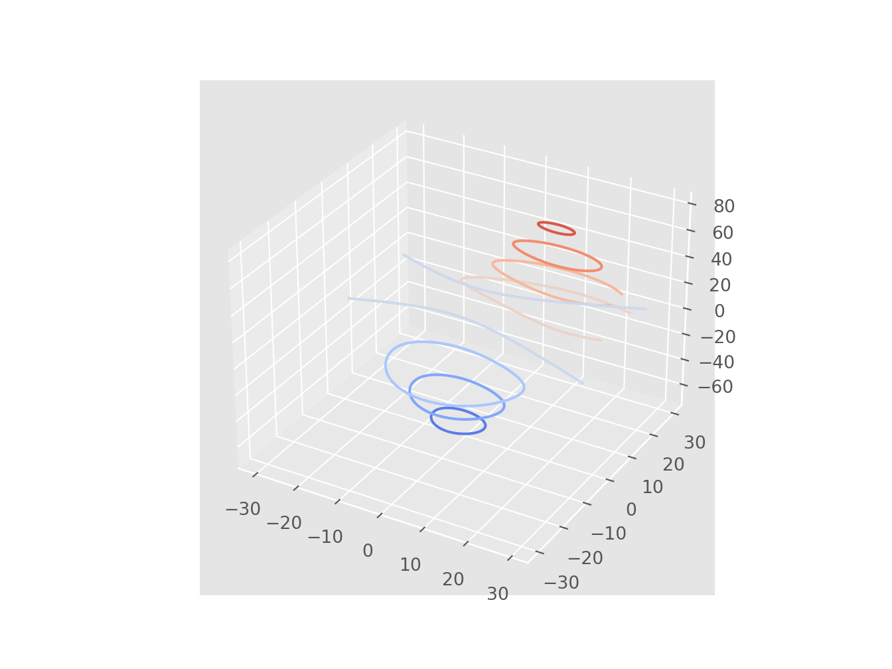

Ch. 1 Introduction
library(reticulate)
reticulate::use_condaenv("r-python")import matplotlib.pyplot as plt
plt.plot([1, 2, 3, 4])
plt.ylabel('some numbers')
plt.show()
1.1 The “hello world” plot
import matplotlib.pyplot as plt
import numpy as np
t = np.arange(0.0, 2.0, 0.01)
s = 1 + np.sin(2*np.pi*t)
plt.plot(t, s)
plt.xlabel('time (s)')
plt.ylabel('voltage (mV)')
plt.title('About as simple as it gets, folks')
plt.grid(True)
plt.savefig("test.png")
plt.show()
# https://matplotlib.org/2.0.2/examples/mplot3d/contour3d_demo.html
from mpl_toolkits.mplot3d import axes3d
import matplotlib.pyplot as plt
from matplotlib import cm
fig = plt.figure()
ax = fig.add_subplot(111, projection='3d')
X, Y, Z = axes3d.get_test_data(0.05)
cset = ax.contour(X, Y, Z, cmap=cm.coolwarm)
ax.clabel(cset, fontsize=9, inline=1)
plt.show()# https://matplotlib.org/gallery/showcase/anatomy.html#sphx-glr-gallery-showcase-anatomy-py
import numpy as np
import matplotlib.pyplot as plt
from matplotlib.ticker import AutoMinorLocator, MultipleLocator, FuncFormatter
np.random.seed(19680801)
X = np.linspace(0.5, 3.5, 100)
Y1 = 3+np.cos(X)
Y2 = 1+np.cos(1+X/0.75)/2
Y3 = np.random.uniform(Y1, Y2, len(X))
fig = plt.figure(figsize=(8, 8))
ax = fig.add_subplot(1, 1, 1, aspect=1)
def minor_tick(x, pos):
if not x % 1.0:
return ""
return "%.2f" % x
ax.xaxis.set_major_locator(MultipleLocator(1.000))
ax.xaxis.set_minor_locator(AutoMinorLocator(4))
ax.yaxis.set_major_locator(MultipleLocator(1.000))
ax.yaxis.set_minor_locator(AutoMinorLocator(4))
ax.xaxis.set_minor_formatter(FuncFormatter(minor_tick))
ax.set_xlim(0, 4)
#:> (0.0, 4.0)
ax.set_ylim(0, 4)
#:> (0.0, 4.0)
ax.tick_params(which='major', width=1.0)
ax.tick_params(which='major', length=10)
ax.tick_params(which='minor', width=1.0, labelsize=10)
ax.tick_params(which='minor', length=5, labelsize=10, labelcolor='0.25')
ax.grid(linestyle="--", linewidth=0.5, color='.25', zorder=-10)
ax.plot(X, Y1, c=(0.25, 0.25, 1.00), lw=2, label="Blue signal", zorder=10)
ax.plot(X, Y2, c=(1.00, 0.25, 0.25), lw=2, label="Red signal")
ax.plot(X, Y3, linewidth=0,
marker='o', markerfacecolor='w', markeredgecolor='k')
ax.set_title("Anatomy of a figure", fontsize=20, verticalalignment='bottom')
ax.set_xlabel("X axis label")
ax.set_ylabel("Y axis label")
ax.legend()
def circle(x, y, radius=0.15):
from matplotlib.patches import Circle
from matplotlib.patheffects import withStroke
circle = Circle((x, y), radius, clip_on=False, zorder=10, linewidth=1,
edgecolor='black', facecolor=(0, 0, 0, .0125),
path_effects=[withStroke(linewidth=5, foreground='w')])
ax.add_artist(circle)
def text(x, y, text):
ax.text(x, y, text, backgroundcolor="white",
ha='center', va='top', weight='bold', color='blue')
# Minor tick
circle(0.50, -0.10)
text(0.50, -0.32, "Minor tick label")
# Major tick
circle(-0.03, 4.00)
text(0.03, 3.80, "Major tick")
# Minor tick
circle(0.00, 3.50)
text(0.00, 3.30, "Minor tick")
# Major tick label
circle(-0.15, 3.00)
text(-0.15, 2.80, "Major tick label")
# X Label
circle(1.80, -0.27)
text(1.80, -0.45, "X axis label")
# Y Label
circle(-0.27, 1.80)
text(-0.27, 1.6, "Y axis label")
# Title
circle(1.60, 4.13)
text(1.60, 3.93, "Title")
# Blue plot
circle(1.75, 2.80)
text(1.75, 2.60, "Line\n(line plot)")
# Red plot
circle(1.20, 0.60)
text(1.20, 0.40, "Line\n(line plot)")
# Scatter plot
circle(3.20, 1.75)
text(3.20, 1.55, "Markers\n(scatter plot)")
# Grid
circle(3.00, 3.00)
text(3.00, 2.80, "Grid")
# Legend
circle(3.70, 3.80)
text(3.70, 3.60, "Legend")
# Axes
circle(0.5, 0.5)
text(0.5, 0.3, "Axes")
# Figure
circle(-0.3, 0.65)
text(-0.3, 0.45, "Figure")
color = 'blue'
ax.annotate('Spines', xy=(4.0, 0.35), xycoords='data',
xytext=(3.3, 0.5), textcoords='data',
weight='bold', color=color,
arrowprops=dict(arrowstyle='->',
connectionstyle="arc3",
color=color))
ax.annotate('', xy=(3.15, 0.0), xycoords='data',
xytext=(3.45, 0.45), textcoords='data',
weight='bold', color=color,
arrowprops=dict(arrowstyle='->',
connectionstyle="arc3",
color=color))
ax.text(4.0, -0.4, "Made with http://matplotlib.org",
fontsize=10, ha="right", color='.5')
plt.show()
import numpy as np
import matplotlib.pyplot as plt
plt.style.use('ggplot')
fig, axes = plt.subplots(ncols=2, nrows=2)
ax1, ax2, ax3, ax4 = axes.ravel()
# scatter plot (Note: `plt.scatter` doesn't use default colors)
x, y = np.random.normal(size=(2, 200))
ax1.plot(x, y, 'o')
# sinusoidal lines with colors from default color cycle
L = 2*np.pi
x = np.linspace(0, L)
ncolors = len(plt.rcParams['axes.prop_cycle'])
shift = np.linspace(0, L, ncolors, endpoint=False)
for s in shift:
ax2.plot(x, np.sin(x + s), '-')
ax2.margins(0)
# bar graphs
x = np.arange(5)
y1, y2 = np.random.randint(1, 25, size=(2, 5))
width = 0.25
ax3.bar(x, y1, width)
ax3.bar(x + width, y2, width,
color=list(plt.rcParams['axes.prop_cycle'])[2]['color'])
ax3.set_xticks(x + width)
ax3.set_xticklabels(['a', 'b', 'c', 'd', 'e'])
# circles with colors from default color cycle
for i, color in enumerate(plt.rcParams['axes.prop_cycle']):
xy = np.random.normal(size=2)
ax4.add_patch(plt.Circle(xy, radius=0.3, color=color['color']))
ax4.axis('equal')
ax4.margins(0)
plt.show()
# https://matplotlib.org/gallery/lines_bars_and_markers/cohere.html#sphx-glr-gallery-lines-bars-and-markers-cohere-py
import numpy as np
import matplotlib.pyplot as plt
# Fixing random state for reproducibility
np.random.seed(19680801)
dt = 0.01
t = np.arange(0, 30, dt)
nse1 = np.random.randn(len(t)) # white noise 1
nse2 = np.random.randn(len(t)) # white noise 2
# Two signals with a coherent part at 10Hz and a random part
s1 = np.sin(2 * np.pi * 10 * t) + nse1
s2 = np.sin(2 * np.pi * 10 * t) + nse2
fig, axs = plt.subplots(2, 1)
axs[0].plot(t, s1, t, s2)
axs[0].set_xlim(0, 2)
axs[0].set_xlabel('time')
axs[0].set_ylabel('s1 and s2')
axs[0].grid(True)
cxy, f = axs[1].cohere(s1, s2, 256, 1. / dt)
axs[1].set_ylabel('coherence')
fig.tight_layout()
plt.show()